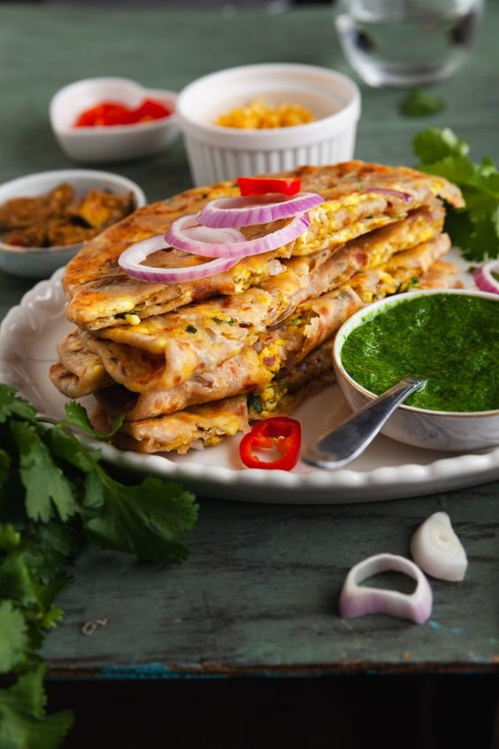

- 2 cups Whole Wheat flour
- Salt to taste
- A pinch of Carom seed
- 2 tsp Ghee
- Water
- 1 tsp Ghee
- 2 Green chilli, finely chopped
- 1 inch Ginger, finely chopped
- A pinch of Salt
- A pinch of Chilli flake
- A pinch of Oregano
- ⅓ cup Processed cheese, grated
- ½ tsp Ghee, for roasting
- ¼ cup Sweet corn kernels
- fresh Red chilli, chopped
- 2 tbsp Capscicum, chopped
- ½ tsp Chilli flakes
- ½ tsp Oregano
- 3-4 fresh Basil leaf, roughly torn
- 1 tbsp Tomato ketchup
- 2 tbsp Tomato, chopped
- Processed cheese, grated
- ½ tsp Olive oil
- Fresh Basil leaf
- Chilli flake
- Oregano
|
- In a bowl, add whole wheat flour, salt to taste, ghee and mix once.
- Now, add water and knead it properly, apply ghee cover and keep
aside for further use.
- In a small bowl, add green chilli, ginger, salt to taste, chilli
flake, oregano.
- Add processed cheese and mix it well. Keep aside for further use.
- In a bowl, add sweet corn kernel, red chilli, capsicum, chilli
flakes, oregano.
- Add Basil leaf and mix well and keep aside for further use.
- Firstly, take two equal portions of the dough and roll it using a
rolling pin.
- Now, on one paratha spread the prepared filling and place the other
rolled paratha on top of it properly.
- Now, apply some ghee on a pan and place the paratha and cook
slightly crisp from one side.
- Flip it and cook from the other side as well.
- Now spread the tomato ketchup on the other side, tomato, cheese.
- Add the toppings and cover it from the hot pan and cook on medium
flame.
- Garnish it with basil leaf and olive oil.
- Serve hot.
-
|  |
-
👉🏻 Paneer Cheese Paratha | Fluffy & Packed with Cheese! 🧀
-
Don't forget to LIKE, COMMENT, SHARE and SUBSCRIBE for more
delicious recipes and cooking tips from The Cooking Royalty.
Discover delicious, easy-to-follow recipes fit for
royalty on
our Cooking Royalty website—where every meal is a
masterpiece!.
Share this deliciousness with friends and family!
|
|